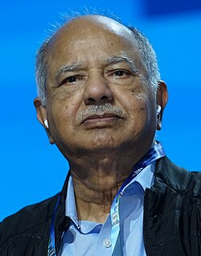
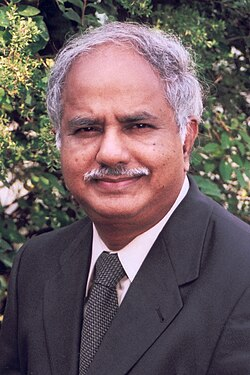

Raj Reddy | |
|---|---|
| దబ్బాల రాజగోపాల్ రెడ్డి | |
 Reddy at AAAI 2026 | |
| Born | Dabbala Rajagopal Reddy 13 June 1937 |
| Citizenship | United States |
| Education | University of Madras (BEng) University of New South Wales (MTech) Stanford University (PhD) |
| Awards |
|
| Scientific career | |
| Fields | Artificial Intelligence Robotics Human-Computer Interaction |
| Institutions | IIIT Hyderabad[1][2] Carnegie Mellon University Stanford University |
| John McCarthy | |
Doctoral students | James K. Baker Alexander Waibel James Gosling Janet M. Baker[3] Kai-Fu Lee[3] Xuedong Huang Roni Rosenfeld Harry Shum Hsiao-Wuen Hon |
.jpg){kind=link}
Dabbala Rajagopal "Raj" Reddy (born 13 June 1937) is an Indian-born American computer scientist. He is one of the early pioneers of artificial intelligence and has served on the faculty of Stanford and Carnegie Mellon for over 50 years.[4] He was the founding director of the Robotics Institute at Carnegie Mellon University. He was instrumental in helping to create Rajiv Gandhi University of Knowledge Technologies in India, to cater to the educational needs of the low-income, gifted, rural youth. He was the founding chairman of International Institute of Information Technology, Hyderabad. He and Edward Feigenbaum won the 1994 ACM Turing Award, sometimes known as the Nobel Prize of computer science, for their work in the field of artificial intelligence. Reddy was the first person of Asian origin to receive the Turing Award.
Early life and education
Raj Reddy was born in a Telugu family[5] in Katur village of Chittoor district of present-day Andhra Pradesh, India. His father, Sreenivasulu Reddy, was a landowner, and his mother, Pitchamma, was a homemaker. He was the first in his family to attend college.
After graduating with a bachelor's degree in civil engineering from College of Engineering, Guindy (presently Anna University, Chennai, affiliated to University of Madras), he went to Australia as an intern. While a student at the University of New South Wales, he started using an English Electric Deuce Mark II computer (Vacuum Tube, Mercury Delay line memory with punch card I/O). After graduating with an MTech degree from UNSW in 1960, he joined IBM where he worked as an Applied Science representative. In 1963 he joined Stanford University, graduating in 1966 as the first PhD in AI under John McCarthy. After 3 years on the Faculty at Stanford, he joined Carnegie Mellon University to work with AI pioneers Allen Newell and Herb Simon.[6]
Career
{kind=link}

Reddy is the University Professor of Computer Science and Robotics and Moza Bint Nasser Chair at the School of Computer Science at Carnegie Mellon University. From 1960, he worked for IBM in Australia.[4] He was an Assistant Professor of Computer Science at Stanford University from 1966 to 1969.[7] He joined the Carnegie Mellon faculty as an associate professor of Computer Science in 1969. He became a full professor in 1973 and a university professor, in 1984.[8]
Reddy was the founding director of the Robotics Institute[9] from 1979[10] to 1991[11] and the Dean of School of Computer Science from 1991 to 1999. As a dean of SCS, he helped create the Language Technologies Institute, Human Computer Interaction Institute, Center for Automated Learning and Discovery (since renamed as the Machine Learning Department), and the Institute for Software Research. He is the chairman of Governing Council of IIIT Hyderabad.[12] He was the founding Chancellor (2008-2019) of Rajiv Gandhi University of Knowledge Technologies (RGUKT).[13]
Reddy was a co-chair[14] of the President's Information Technology Advisory Committee (PITAC) from 1999 to 2001.[15] He was one of the founders of the American Association for Artificial Intelligence[16] and was its president from 1987 to 1989.[17] He served on the International board of governors of Peres Center for Peace in Israel.[18] He served as a member of the governing councils of EMRI[19] and HMRI[20] which use technology-enabled solutions to provide cost-effective health care coverage to rural population in India.
AI research
Reddy's early research was conducted at the AI labs at Stanford, first as a graduate student and later as an assistant professor, and at CMU since 1969.[21] His AI research concentrated on perceptual and motor aspect of intelligence such as speech, language, vision and robotics. Over a span of five decades, Reddy and his colleagues created several demonstrations of spoken language systems, e.g., voice control of a robot,[22][23] large vocabulary connected speech recognition,[24][25] speaker independent speech recognition,[26][27][28] and unrestricted vocabulary dictation.[29] Reddy and his colleagues have made seminal contributions to Task Oriented Computer Architectures,[30] Analysis of Natural Scenes,[31] Universal Access to Information,[32] and Autonomous Robotic Systems.[33] Hearsay I[34] was one of the first systems capable of continuous speech recognition. Subsequent systems like Hearsay II, Dragon, Harpy,[35] and Sphinx I/II developed many of the ideas underlying modern commercial speech recognition technology as summarized in his recent historical review of speech recognition with Xuedong Huang and James K. Baker.[36] Some of these ideas—most notably the "blackboard model" for coordinating multiple knowledge sources—have been adopted across the spectrum of applied artificial intelligence.[33]
Technology in Service of Society
Reddy's other major research interest has been in exploring the role of "Technology in Service of Society".[33] One of the early efforts, Centre mondial informatique et ressource humaine was founded by Jean-Jacques Servan-Schreiber in France in 1981 with a technical team consisting of Nicholas Negroponte, Alan Kay, Seymour Papert, Raj Reddy, and Terry Winograd. Reddy served as the Chief Scientist for the center. The centre had as its objective the Development of Human Resource in Third World Countries using Information Technology. Several seminal experiments in providing computerized classrooms and rural medical delivery were attempted. In 1984, President Mitterrand decorated Reddy with the Légion d'Honneur medal.[37][38][39]
Universal Digital Library Project was started by Raj Reddy, Robert Thibadeau, Jaime Carbonell, Michael Shamos, and Gloriana S. Clair in the 1990s, to scan books and other media such as music, videos, paintings, and newspapers[40][41][42] and to provide online access to all creative works to anyone, anywhere at any time. A larger Million Book Project was started in 2001 as a collaborative effort with China (Professors Pan Yunhe, Yuting Zhuang, Gao Wen) and India (Prof N. Balakrishnan).
Marks of a student are a result of several factors such as the quality of the teachers, the education level of the parents, the ability to pay for coaching classes and the time spent on the task of learning the subject. Rural students tend to be at a serious disadvantage along each of these dimensions. Rajiv Gandhi University of Knowledge Technologies (RGUKT) was created for educating gifted rural youth in Andhra Pradesh in 2008, by Drs. Y. S. Rajasekhara Reddy, K. C. Reddy, and Raj Reddy, based on the premise that the current nationwide merit-based admissions, such as SAT tests, are flawed and do not provide a level playing field for gifted youth from rural areas.[43]
Reddy proposed that a fully connected population makes it possible to think of a KG-to-PG-Online-College in every village providing personalized instruction.[44][45] Assuming that all students are provided digital literacy and learning-to-learn training as part of primary education before they dropout, anyone can learn any subject at any age even if there are no qualified teachers on the subject.
AI can be used to empower the people at the bottom-of-the-pyramid, who have not benefited from the IT revolution so far.[46] Reddy proposed that recent technological advances in AI will ultimately enable anyone to watch any movie, read any textbook, and talk to anyone independent of the language of the producer or consumer.[47] He also proposed that the use of Smart Sensor Watches can be used to eliminate COVID lockdowns by monitoring the sensor data to identify and isolate people with symptoms.[48]
Awards and honors
He is a fellow of the AAAI,[49] ACM,[50] Acoustical Society of America,[51] IEEE[52] and Computer History Museum.[53][54] Reddy is a member[11] of the United States National Academy of Engineering, American Academy of Arts and Sciences, Chinese Academy of Engineering, Indian National Science Academy, and Indian National Academy of Engineering.
He has been awarded honorary doctorates (Doctor Honoris Causa) from SV University, Universite Henri-Poincare, University of New South Wales,[55] Jawaharlal Nehru Technological University, University of Massachusetts,[56] University of Warwick,[57] Anna University, IIIT (Prayagraj), Andhra University, IIT Kharagpur,[58] Hong Kong University of Science and Technology,[59] Rajiv Gandhi University of Knowledge Technologies, and Carnegie Mellon University.[60]
In 1994 he and Edward Feigenbaum received the Turing Award, "for pioneering the design and construction of large scale artificial intelligence systems, demonstrating the practical importance and potential commercial impact of artificial intelligence technology."[61] In 1984, Reddy was awarded the French Legion of Honour by French President François Mitterrand.[37][38][39] Reddy also received Padma Bhushan, from the President of India in 2001,[62] the Okawa Prize in 2004,[63] the Honda Prize in 2005,[64] and the Vannevar Bush Award in 2006.[65]
Contributions
Machine Intelligence and Robotics: Report of the NASA Study Group – Executive Summary,[66] Final Report[67] Carl Sagan (chair), Raj Reddy (vice chair) and others, NASA JPL, September 1979. Foundations and Grand Challenges of Artificial Intelligence, AAAI Presidential Address, 1988.[17]
Miscellaneous
Kai-Fu Lee's 2018 bestseller 'AI Superpowers: China, Silicon Valley, and the New World Order' is dedicated "To Raj Reddy, my mentor in AI and in life".[68]
References
- ^ Cerf's curriculum vitae as of February 2001, attached to a transcript of his testimony that month before the United States House Energy Subcommittee on Telecommunications and the Internet, from ICANN's website
- ^ "Governing Council | IIIT Hyderabad". 20 August 2022.
- ^ a b "CMU Computer Science PhD Awards by Advisor". Carnegie Mellon. Retrieved 3 August 2011.
- ^ a b "CMU's Raj Reddy fills lives with big questions". Pittsburgh Post-Gazette. 15 June 1998. Archived from the original on 16 October 2003. Retrieved 2 August 2011.
- ^ Suryanarayana, Pisupati Sadasiva (29 February 2016). Smart Diplomacy: Exploring China-india Synergy. World Scientific. ISBN 978-1-938134-70-8.
- ^ Krause, Alex. "Raj Reddy". The Robotics Institute Carnegie Mellon University. Retrieved 28 December 2019.
- ^ "Stanford Faculty List". Stanford. Archived from the original on 30 January 2021. Retrieved 26 October 2012.
- ^ "CS50: FIFTY YEARS OF COMPUTER SCIENCE". Carnegie Mellon. Archived from the original on 15 June 2010. Retrieved 2 August 2011.
- ^ "History of the Robotics Institute". Robotics Institute, Carnegie Mellon. Archived from the original on 27 June 2015. Retrieved 2 August 2011.
- ^ "Robotics Institute Founders". Carnegie Mellon University Article Dec. 2004, Vol. 1, No. 4. Archived from the original on 28 September 2011. Retrieved 20 August 2011.
- ^ a b "Raj Reddy". rr.cs.cmu.edu. Archived from the original on 9 July 2011. Retrieved 24 July 2011.
- ^ "Governing Council of International Institute of Information Technology". IIIT. Archived from the original on 28 July 2011. Retrieved 2 August 2011.
- ^ "About RGUKT - RGUKT-AP". www.rgukt.in. Retrieved 23 May 2023.
- ^ "Draft Minutes of PITAC". Networking and Information Technology Research and Development (NITRD). Archived from the original on 5 November 2015. Retrieved 7 September 2011.
- ^ "Former PITAC Members (1997–2001)". Networking and Information Technology Research and Development (NITRD). Archived from the original on 21 September 2011. Retrieved 7 September 2011.
- ^ "Origins of the American Association for Artificial Intelligence". AI Magazine. 26 (4): 5–12.
- ^ a b "Foundations and Grand Challenges of Artificial Intelligence". AI Magazine. 9 (4): 9–21.
- ^ "International Board of Governors of the Peres Center for Peace". Peres Center. Archived from the original on 20 July 2011.
- ^ "Emergency Management and Research Institute - GVK EMRI". emri.in.
- ^ "Hmri.in". www.hmri.in. Archived from the original on 21 July 2011.
- ^ "CMU-Software Engineering-Faculty-Raj Reddy". Carnegie Mellon. Retrieved 18 August 2011.
- ^ "HearHere Video". CMU. Archived from the original on 1 February 2014. Retrieved 2 September 2011.
- ^ Hear! Here! Computer Speech Recognition, Catalog Number: 102743239, Lot Number: X5866.2011, 1968, retrieved 22 February 2023
- ^ "Hearsay Video". CMU. Archived from the original on 1 February 2014. Retrieved 2 September 2011.
- ^ "Harpy Video". CMU. Archived from the original on 1 February 2014. Retrieved 2 September 2011.
- ^ Lee; Hon & Reddy (1990). "An Overview of the Sphinx Speech Recognition System". IEEE Transactions on Acoustics, Speech, and Signal Processing. 38 (1): 35–44. Bibcode:1990ITASS..38...35L. CiteSeerX 10.1.1.477.4864. doi:10.1109/29.45616.
{{cite journal}}: Cite uses deprecated parameter|citeseerx=(help) - ^ A Computer with Hands, Eyes, and Ears, McCarthy, Earnest, Reddy, and Vicens, Proceedings of the AFIPS '68, 9–11 December 1968, Fall Joint Computer Conference, Part I December 1968 Pages 329–338
- ^ Archived at Ghostarchive and the Wayback Machine: "Stanford AI Project - Hear Here (Short Version) - YouTube". youtube.com. 4 September 2013. Retrieved 18 December 2020.
- ^ Introduction to Xuedong Huang; Alejandro Acero; Alex Acero; Hsiao-Wuen Hon (2001). Spoken language processing. Prentice Hall. ISBN 978-0-13-022616-7.
- ^ Bisiani; Mauersberg & Reddy (1983). "Task-Oriented Architectures". Proceedings of the IEEE. 71 (7): 885–898. doi:10.1109/PROC.1983.12685. S2CID 38287345.
- ^ Ohlander; Price; Reddy (1978). "Picture Segmentation Using a Recursive Region Splitting Method". Computer Graphics and Image Processing. 8 (3): 313–333. doi:10.1016/0146-664X(78)90060-6.
- ^ "Electrifying Knowledge The Story of the Universal Digital Library_Pittsburgh Quarterly_Summer 2009 by Tom Imerito". CMU. Retrieved 4 September 2011.
- ^ a b c Reddy, R. (2006). "Robotics and Intelligent Systems in Support of Society". IEEE Intelligent Systems. 21 (3): 24–31. CiteSeerX 10.1.1.106.6402. doi:10.1109/MIS.2006.57. S2CID 7757286.
{{cite journal}}: Cite uses deprecated parameter|citeseerx=(help) - ^ Archived at Ghostarchive and the Wayback Machine: "CMU Hearsay 1973 (Short Version) - YouTube". youtube.com. 4 September 2013. Retrieved 18 December 2020.
- ^ "Harpy - YouTube". youtube.com. 27 August 2013. Archived from the original on 11 December 2021. Retrieved 18 December 2020.
- ^ Xuedong Huang; James Baker; Raj Reddy (January 2014). "A Historical Perspective of Speech Recognition". cacm.acm.org.
- ^ a b "Prof honored", Mitterrand Visit and Legion of Honor Ceremony. Pittsburgh Post-Gazette, OCR corrected copy, original PPG, 28 March 1984
- ^ a b "Worlds apart". Mitterrand Legion of Honor Ceremony, Pittsburgh Post-Gazette, OCR corrected copy, original PPG, 29 March 1984
- ^ a b "Fitting Honor for Reddy", Mitterrand Visit and Legion of Honor Ceremony. Pittsburgh Post-Gazette Editorial, OCR corrected copy, original PPG, 29 March 1984
- ^ "A Global Infrastructure for Universal Access to Information, April 1997". rr.cs.cmu.edu. Retrieved 15 December 2020.
- ^ "Universal Digital Library 1997 (2 Min) - YouTube". youtube.com. 4 September 2013. Archived from the original on 11 December 2021. Retrieved 18 December 2020.
- ^ Malamud, Carl; Pitroda, Sam. Code Swaraj (PDF). Public.Resource.Org. p. 43. ISBN 978-1-892628-05-3. Retrieved 3 January 2019.
- ^ "RGUKT". rgukt.in. Retrieved 21 December 2020.
- ^ KG to PG Online Micro University in Every Village, Talk presented to HRD Ministry of AP, 5 July 2016
- ^ Disruptive Future of Education, Talk presented at the VC conference, India, 11 August 2016
- ^ Reaching the Three Billion People at The Bottom of the Pyramid, Talk at Harbin Institute of Technology, Harbin, 6 June 2018
- ^ Voice Computing and Reaching the 3B People at the Bottom of the Pyramid, Talk presented at Heidelberg Laureate Forum, 20 Sep 2016
- ^ No More Lockdowns? An Agenda to Eliminate Lockdowns the Post-Pandemic Era, World Laureates Forum, Shanghai, 29 Oct 2020
- ^ "Elected AAAI Fellows". aaai.org. Retrieved 22 December 2020.
- ^ "Raj Reddy". awards.acm.org. Retrieved 22 December 2020.
- ^ "Fellows of the Society". Acoustical Society of America. Retrieved 22 December 2020.
- ^ "IEEE Fellows Directory - Member Profile". IEEE. Retrieved 22 December 2020.
- ^ "Reimagining Tradition: CHM Honors Tech Legends in First-Ever Virtual Fellow Awards". CHM. 17 February 2021. Retrieved 8 April 2021.
- ^ "2021 CHM Fellows: RAJ REDDY - For his groundbreaking work in artificial intelligence, robotics, and computer science education". 21 February 2021.
- ^ "Honorary Degrees". University of New South Wales. Archived from the original on 3 August 2008. Retrieved 7 September 2011.
- ^ "Honorary Degree". University of Massachusetts. Retrieved 7 September 2011.
- ^ "Honorary Graduates and Chancellor's Medallists". University of Warwick. Retrieved 7 September 2011.
- ^ "Honoris Causa Awardees". IIT-kgp. Archived from the original on 16 October 2011. Retrieved 7 September 2011.
- ^ "HKUST to Confer Honorary Doctorates on Eminent Academics and Leaders". Press Release. Archived from the original on 27 September 2011. Retrieved 7 September 2011.
- ^ "Raj Reddy To Receive Honorary Degree at CMU Commencement | Carnegie Mellon University - Computer Science Department". csd.cmu.edu. Retrieved 9 July 2022.
- ^ "ACM Award Citation / Raj Reddy". awards.acm.org. Archived from the original on 26 July 2011. Retrieved 25 July 2011.
- ^ "Padma Bhushan Awardees — Padma Awards". india.gov.in. Retrieved 25 July 2011.
- ^ "The Winners of the Okawa Prize". Okawa Foundation. Archived from the original on 12 June 2008. Retrieved 3 August 2011.
- ^ "Honda Prize 2005". Honda Foundation. Retrieved 3 August 2011.
{{cite web}}: CS1 maint: deprecated archival service (link) - ^ "National Science Board — Honorary Awards — Vannevar Bush Award Recipients". nsf.gov. Retrieved 24 July 2011.
- ^ Machine Intelligence and Robotics_Executive Summary (PDF). Carnegie Mellon University. Retrieved 7 September 2011.
- ^ Machine Intelligence and Robotics: Report of the NASA Study Group (PDF). Carnegie Mellon University. Retrieved 7 September 2011.
- ^ Lee, Kai-Fu (22 September 2018). "Opinion | What China Can Teach the U.S. About Artificial Intelligence (Published 2018)". The New York Times. ISSN 0362-4331. Retrieved 22 December 2020.
External links
 Media related to Raj Reddy at Wikimedia Commons
Media related to Raj Reddy at Wikimedia Commons